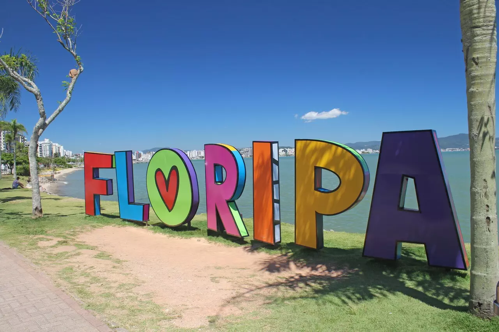
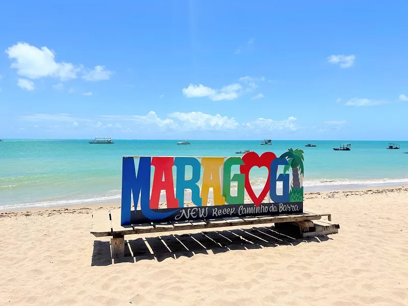

Praias do Brasil
O Brasil é um dos países tropicais conhecidos pelas praias mais bonitas do planeta. Confira as melhores praias para esse verão.
Jericoacoara

Jericoacoara é uma praia localizada na vila homônima, no município de Jijoca de Jericoacoara, no estado do Ceará, no Brasil. Está localizada a 295 km a oeste da capital do estado, Fortaleza. Foi eleita em 1994 pelo jornal estadunidense The Washington Post uma das dez praias mais bonitas do planeta.Em 2014, foi eleita pelo Huffington Post a quarta melhor praia da Terra.É um dos locais mais frequentados por praticantes de windsurfe no país. A praia é parte integrante do Parque Nacional de Jericoacoara.
Atrações
- Pedra Furada.
- Duna do pôr do sol.
- Igreja Nossa Senhora da Consolação.
- Serrote.
- Farol de Jericoacoara.
- Campo das Dunas.
Florianópolis

Florianópolis, capital de Santa Catarina, no Sul do país, está no alto da lista das cidades mais visitadas por estrangeiros no Brasil, ela possui praias maravilhosas, muitas vezes com águas cristalinas, tem diversas trilhas, com muitas delas terminando em praias desertas.
Atrações
- Ponte Hercílio Luz.
- Praia Mole.
- Costa da Lagoa.
- Lagoa da Conceição.
Maragogi

Maragogi fica localizada em Alagoas, a cerca de 124 km de Maceió, capital do estado, e a cerca de 130 km de Recife. A pequena cidade, com cerca de 30 mil habitantes, tem um belo litoral, está banhada pela Costa dos Corais, se tornou um dos destinos mais procurados do Nordeste pela beleza de suas piscinas naturais e tranquilidade.
Atrações
- São Miguel dos Milagres
- Praia dos Carneiros
- Praia de Antunes
- Caminho de Moisés
Porto de Galinhas

Porto de Galinhas foi eleita a praia mais bonita do Brasil pela Revista Viagem e Turismo por 10 anos consecutivos, fica localizada no litoral sul de Pernambuco, Porto de Galinhas é uma antiga vila de pescadores que se tornou o balneário mais querido do Nordeste. Reúne maravilhas naturais e um rico ecossistema.
Atrações
- Portal de Macaípe
- Passeio de buggy
- Piscinas Naturais
- Farol de Porto de Galinhas
Praia do Frances

Localizada no município de Marechal de Deodoro a apenas 33 km de Maceió, a Praia do Francês em Alagoas, é uma das praias mais badaladas do litoral sul, e uma das mais bonitas do Estado. Barreira de corais, piscina natural, surf, coqueirais e pôr do sol, são os elementos que compõem o cenário da Praia do Francês.
Atrações
- Surfe
- Trilha pelo antigo leprosário
- Centro Histórico de Marechal Deodoro
- Prainha-Barra Nova